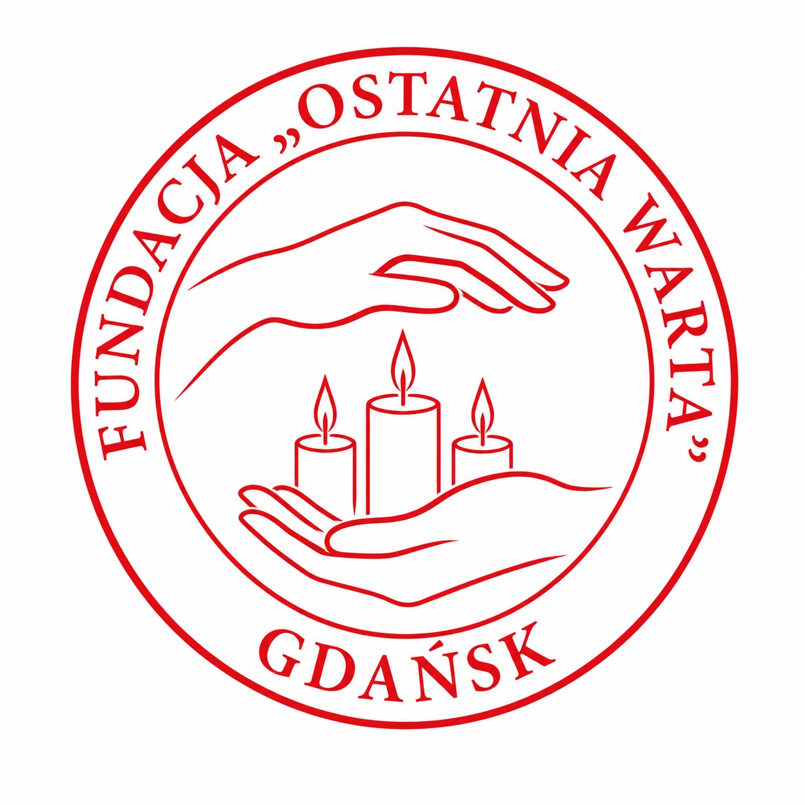
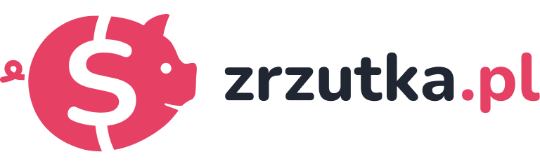

FUNDACJA "OSTATNIA WARTA"
„Zostańcie tu i czuwajcie ze mną!”
Dajemy naszą obecność tam, gdzie brakuje nadziei.
Aby nikt nie musiał odchodzić w samotności.
Dajemy naszą obecność tam, gdzie brakuje nadziei.
Aby nikt nie musiał odchodzić w samotności.
Fundacja „Ostatnia Warta” to wspólnota osób, których ścieżki życiowe splatają się z codziennością gdańskich ulic. Jesteśmy ludźmi takimi jak Państwo – sąsiadami, przechodniami, osobami, które w zgiełku współczesnego świata nie utraciły wrażliwości na cichy głos drugiego człowieka. Nie odnajdą Państwo u nas luksusowych atrybutów statusu ani szklanych biurowców; naszą największą wartością jest empatia oraz gotowość do bezinteresownego pochylenia się nad cierpieniem.
Nasza misja zrodziła się w dobie powszechnego odosobnienia, kiedy w cieniu globalnego niepokoju dostrzegliśmy, jak wielką wagę ma prosta obecność. To, co przez ostatnie lata było jedynie odruchem serca i nieformalnym wsparciem świadczonym potrzebującym, w lutym 2026 roku zyskało godną, sformalizowaną postać prawną. [Zobacz też Manifest "Ostatniej Warty"]
Wierzymy głęboko, że prawdziwy sens egzystencji nie objawia się w pogoni za dobrami doczesnymi, lecz w uśmiechu drugiego człowieka i poczuciu spełnionego obowiązku. Odnaleźliśmy szczęście w pomocy niesionej bez oczekiwania na nagrodę. W świecie zdominowanym przez tymczasowość, my wybieramy trwałość więzi i godność, która towarzyszy człowiekowi do ostatnich chwil.
Dlaczego „Ostatnia Warta”? Ponieważ z największą pokorą stajemy na straży ludzkiego życia zawsze wtedy, gdy spowija je mrok niepewności, bólu czy zapomnienia. Pełnimy tę najważniejszą z wart wszędzie tam, gdzie gaśnie nadzieja, a horyzont przysłania nagły ciężar trudnej diagnozy, bezkresnej samotności czy nieuchronnego pożegnania. Jesteśmy niezachwianym oparciem i tarczą przeciwko rozpaczy. Jesteśmy po to, aby żaden człowiek – bez względu na to, na jakim etapie swojej drogi się znajduje – nie musiał mierzyć się z cierpieniem w pojedynkę i nigdy nie kroczył w nieznane bez bezpiecznego uścisku dłoni.
Od cichej warty (sitting service) w chwilach trwogi, po żelazne oparcie finansowe. Dzięki Tobie! Obejmujemy darmową troską osoby naznaczone ciężarem trudnych diagnoz oraz tych zepchniętych w najgłębsze odmęty zapomnienia – ludzi opuszczonych i niewidzialnych dla społeczeństwa. Niestrudzenie dowodzimy, że w konfrontacji z cierpieniem nikt nie pozostaje sam.
Szlachetna posługa towarzyszenia osobom w procesie odchodzenia. Dbamy o przestrzeń wolną od lęku, nasyconą spokojem i emocjonalnym wsparciem.
Czuwanie przy łóżku chorego w placówkach medycznych oraz domach prywatnych. Jesteśmy tam, gdzie ludzka obecność staje się najcenniejszym lekarstwem.
Realizacja idei stałej „Warty” – ofiarowanie poczucia bezpieczeństwa podopiecznym oraz chwili niezbędnego wytchnienia ich najbliższym opiekunom.
Kompleksowa pomoc rzeczowo-finansowa. Aktywnie wspieramy w leczeniu, zakupie sprzętu i codziennym funkcjonowaniu osób chorych.
Nasza pomoc jest w 100% bezpłatna. Jeśli potrzebują Państwo wsparcia dla siebie lub bliskiej osoby, prosimy o zapoznanie się z dokumentami. Stanowią one podstawę do objęcia opieką przez naszych wolontariuszy.
Szukamy osób o wielkich sercach, gotowych pełnić „Wartę”. Nie wymagamy wykształcenia medycznego – najważniejsza jest empatia i czas. Oferujemy profesjonalne przygotowanie do posługi.
Organy Fundacji działają całkowicie pro publico bono. Oznacza to, że Państwa szlachetne wsparcie trafia w całości na realizację celów statutowych, finansując kompleksową opiekę nad tymi, którzy najbardziej jej potrzebują.
FUNDACJA "OSTATNIA WARTA"
Bank:

Tytuł: Darowizna na cele statutowe
Przelew na telefon
 :
:

Zeskanuj kod w aplikacji bankowej, aby wypełnić dane automatycznie.

Pobierz i wydrukuj gotowy blankiet wpłaty (PDF)
Poznaj wstrząsające, piękne i skłaniające do refleksji historie z naszej codziennej posługi przy łóżkach chorych i samotnych.
Przeczytaj nasze historieWesprzyj Fundację – poznaj wszystkie formy pomocy online.


 PATRONITE
PATRONITE
Pomagaj nam bezpłatnie przy okazji codziennych zakupów online.

Zapraszamy lokalnych przedsiębiorców do objęcia Fundacji Mecenatem.
Masz pytania? Skontaktuj się z nami poprzez poniższy formularz.